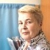

Дошкольное отделение школы № 2033
Подробное описание Школы № 2033 — в соответствующем разделе.
- Щёлковский проезд, 1А
- 3-я Парковая улица, 61А
- 3-я Парковая улица, 46А
- 5-я Парковая улица, 43А
Воспитатели
Воспитатели, которых чаще всего благодарят родители (отзывы и профили сотрудников взяты с официального сайта школы):|
Воспитатель
Суетова Светлана Юрьевна
7 благодарностей |
Воспитатель
Родионова Екатерина Алексеевна
6 благодарностей |
Воспитатель
Давыдова Ольга Ивановна
5 благодарностей |
Воспитатель
Озолина Марина Аркадьевна
4 благодарности |
|
Воспитатель
Тихончук Любовь Анатольевна
3 благодарности |
Воспитатель
Скуратова Ольга Петровна
3 благодарности |
Методист
Зайченко Лариса Валентиновна
2 благодарности |
Воспитатель
Гончарук Любовь Дмитриевна
1 благодарность |
|

Логопед
Копылова Светлана Викторовна
1 благодарность |
Воспитатель
Ауди Анна Сергеевна
1 благодарность |
Воспитатель
Федотова Наталья Александровна
1 благодарность |
Воспитатель
Васильева Татьяна Викторовна
1 благодарность |
|
Воспитатель
Осипова Надежда Николаевна
1 благодарность |
Отзывы
Данные собраны c официального сайта школы и через форму для отзывов.
От имени нашей семьи хочу выразить благодарность всему коллективу Данииловского корпуса,а особенно воспитателям группы №11 Скуратовой Ольге Петровне,Родионовой Екатерине Алексеевне и помощнику воспитателя Осиповой Наталье Владимировне. Всегда приветливы,с детьми очень терпеливы,умеют найти индивидуальный подход к каждому ребенку. Детям очень нравятся занятия в саду,любят посещать досуг,с радостью идут в сад. в группе царит комфортная и теплая обстановка благодаря пониманию и равноправию.Вы учите деток дружить и уважать друг друга,творить и фантазировать,ценить прекрасное,быть честными,добрыми,заботливыми. Шаг за шагом под чутким руководством воспитателей дети познают окружающий мир,радость дружбы,свои личные возможности. В группе чистота и порядок,комфорт и уют. Наша семья полностью доверяет Вам.ведь родителю,когда он оставляет ребенка на весь день,очень важно,что его ребенок в надежных руках. Мы спокойны за жизнь и безопасность наших детей,ведь рядом с ними настоящая команда профессионалов! Спасибо!!!
От имени коллектива родителей младшей группы №6 Петровского корпуса, ДОУ, хочу выразить благодарность нашим воспитателям Гончарук Любовь Дмитриевне и Канцер Светлане Викторовне. Для наших детей это был первый год посещения детского сада. Как все родители, мы очень переживали и волновались, но благодаря нашим замечательным педагогам адаптационный период прошёл очень мягко. Каждое утро малышей в группе встречали ласковыми словами и доброй улыбкой. Сейчас наши дети с удовольствием ходят в сад, а это значит, что им нравится там находиться. И в этом большая заслуга наших чудесных воспитателей. Дети окружены большой заботой и вниманием. Радует, что занятия с детьми разнообразны и интересны - это и рисование, лепка, бассейн, музыкальные занятия и даже мини-сценки из русских сказок с участием наших малышей. Приемная группы украшена детскими рисунками, аппликациями, разными поделками, а в помещении группы всегда чистота, порядок и уют. Особо хочу выделить работу старшего методиста Зайченко Ларисы Валентиновны, под чутким руководством которой в саду царит тёплая и комфортная обстановка. Чувствуется, что здесь работает дружный и слаженный коллектив, профессионалы своего дела. От имени родителей всей нашей группы, Любовь Дмитриевна и Светлана Викторовна, большое спасибо!!!
Добрый день,
Мой сын, с весьма сложным характером, но Ольга Ивановна, смогла найти к нему подход, нужные слова и ребенок хорошо адаптировался в коллективе. Спасибо вам за ваш труд, своевременные рекомендации для меня и помощь в воспитании ребенка. Спасибо что смогли разглядеть в маленькой буке способности и развивать их на протяжении всего периода пока мы посещали сад. Я ни разу не пожалела что попала именно к этому Воспитателю и в этот сад. (Даниловский корпус)
Мой сын, с весьма сложным характером, но Ольга Ивановна, смогла найти к нему подход, нужные слова и ребенок хорошо адаптировался в коллективе. Спасибо вам за ваш труд, своевременные рекомендации для меня и помощь в воспитании ребенка. Спасибо что смогли разглядеть в маленькой буке способности и развивать их на протяжении всего периода пока мы посещали сад. Я ни разу не пожалела что попала именно к этому Воспитателю и в этот сад. (Даниловский корпус)
Выражаем большую благодарность за возможность поприсутствовать на занятии физкультуры у нашей дочери в Петровском корпусе 3 декабря. Занятие было построено в виде эстафеты, и каждый ребёнок смог проявить себя. Было интересно наблюдать, как дети пробуют свои силы в различных видах спорта, умеют работать с мячом, метать снаряды, работать в команде.
Хочется также поблагодарить Татьяну Викторовну за то, что на своих занятиях она не только развивает ребят физически, прививает им любовь к спорту, учит работать их в команде, но и помогает развивать логическое мышление.
С уважением, Семья Легких.
Хочется также поблагодарить Татьяну Викторовну за то, что на своих занятиях она не только развивает ребят физически, прививает им любовь к спорту, учит работать их в команде, но и помогает развивать логическое мышление.
С уважением, Семья Легких.
Сегодня в День Открытых Дверей я посетила Ярославский корпус(бывший садик 2517). У единственной оставшейся на сегодняшний день группы полного дня было музыкальное занятие. На меня произвело неизгладимое впечатление великолепная работа педагога Невретиновой Аллы Михайловны. Она играла и на фортепиано и пела песни, а также изображала разных персонажей из сказок. Даже самые маленькие дети,которым по 2 годика ,были полностью вовлечены в процесс интерактивной музыкальной игры.Высокий профессионализм ,такой запоминающийся подход и, главное, столько любви и тепла Аллы Михайловны к малышам заслуживают отдельную благодарность.Спасибо, Вам, за неоценимый вклад в развитие детишек!
Отдельно хочеться выразить благодарность Грибовской Галине Евгеньевне за создание уютного и домашнего детского садика, за потрясающий коллектив ,за Воспитателей "с большой буквы".Спасибо Ярославскому корпусу за таких людей, как воспитатели группы полного дня: Королева Светлана Леонидовна,Живцова Любовь Васильевна,Куракина Нина Петровна; воспитатели группы ГКП:Ларшина Надежда Валентиновна,Наталья Александровна,Ольга Игоревна. Выражаем огромную благодарность за Ваше чутье,доброту,заботу и огромную любовь к детям.Мы очень любим и дорожим Ярославским корпусом,пусть он и не большой и, возможно, в нем отсутствуют какие-то игрушки, но не смотря на это, сам садик с хорошим
ремонтом ,теплыми стенами. Он оснащен всем необохимым для того ,чтоб дети бежали в него с радостью и чувствовали себя как дома.Огромное спасибо и низкий поклон Ярославскому корпусу и всему коллективу и пероналу,за Вашу работу,теплоту ,заботу и любовь ,которую Вы дарите детям!!!
Мы очень надеемся ,что с таким руководителем ,как Ирина Анатольевна ,Ярославский корпус с его коллективом приобретет в свою копилку новые возможности и достижения!!!
Шмелева Марина (в лице родительского комитета .Боуфал Ольга,Николаева Наталья ,Вечеркина Анастасия)
Отдельно хочеться выразить благодарность Грибовской Галине Евгеньевне за создание уютного и домашнего детского садика, за потрясающий коллектив ,за Воспитателей "с большой буквы".Спасибо Ярославскому корпусу за таких людей, как воспитатели группы полного дня: Королева Светлана Леонидовна,Живцова Любовь Васильевна,Куракина Нина Петровна; воспитатели группы ГКП:Ларшина Надежда Валентиновна,Наталья Александровна,Ольга Игоревна. Выражаем огромную благодарность за Ваше чутье,доброту,заботу и огромную любовь к детям.Мы очень любим и дорожим Ярославским корпусом,пусть он и не большой и, возможно, в нем отсутствуют какие-то игрушки, но не смотря на это, сам садик с хорошим
ремонтом ,теплыми стенами. Он оснащен всем необохимым для того ,чтоб дети бежали в него с радостью и чувствовали себя как дома.Огромное спасибо и низкий поклон Ярославскому корпусу и всему коллективу и пероналу,за Вашу работу,теплоту ,заботу и любовь ,которую Вы дарите детям!!!
Мы очень надеемся ,что с таким руководителем ,как Ирина Анатольевна ,Ярославский корпус с его коллективом приобретет в свою копилку новые возможности и достижения!!!
Шмелева Марина (в лице родительского комитета .Боуфал Ольга,Николаева Наталья ,Вечеркина Анастасия)
Уважаемая Лариса Валентиновна!
Наша дочь прошлый учебный год посещала младшую группу детского сада. Мы счастливы, что первым педагогом в жизни нашей дочки была Тихончук Любовь Анатольевна. Это человек и педагог с большой буквы! Удивительно добрый, чуткий человек, Любовь Анатольевна по-настоящему любит детей, чувствует и понимает их. Наблюдая, как она общается с детьми, испытываешь чувство огромного уважения и восхищения. Для нее нет трудных, нелюбимых детей. К каждому она находит подход, и дети платят ей искренней любовью, с радостью идут в детский сад. Все родители отмечают огромное терпение и любовь, которые весь год дарила нашим детям Любовь Анатольевна, легкость адаптации к саду, уважительное и тактичное отношение к нам. Наши дети многому у нее научились. Большое ей спасибо!
С уважением, родители Ниматовой Екатерины.
Наша дочь прошлый учебный год посещала младшую группу детского сада. Мы счастливы, что первым педагогом в жизни нашей дочки была Тихончук Любовь Анатольевна. Это человек и педагог с большой буквы! Удивительно добрый, чуткий человек, Любовь Анатольевна по-настоящему любит детей, чувствует и понимает их. Наблюдая, как она общается с детьми, испытываешь чувство огромного уважения и восхищения. Для нее нет трудных, нелюбимых детей. К каждому она находит подход, и дети платят ей искренней любовью, с радостью идут в детский сад. Все родители отмечают огромное терпение и любовь, которые весь год дарила нашим детям Любовь Анатольевна, легкость адаптации к саду, уважительное и тактичное отношение к нам. Наши дети многому у нее научились. Большое ей спасибо!
С уважением, родители Ниматовой Екатерины.
Хочется выразить благодарность за организацию выпускного праздника в нашем 55 саду! Наши воспитатели Марина Аркадьевна, Нана Завеновна, Светлана Юрьевна, Алла Михайловна, Наталья Викторовна, Ольга Ивановна, Екатерина Алексеевна,Наталья Владимировна постарались для наших детей на славу! Концерт выше всяких похвал! И танцы, и песни подобраны и поставлены на высшем уровне! Спасибо огромное за этот чудесный праздник, наши детки и мы запомним его надолго!
Хочу поблагодарить наших воспитателей Валентину Ивановну, Анну Сергеевну и их помощника Светлану Викторовну (3-я парковая д.61А, группа №6) за высокий профессионализм, за доброту и отзывчивое сердце, за внимание, заботу и любовь, которыми они щедро одаривают наших деток ежедневно!!! В группе царит атмосфера спокойствия и дружбы, моя дочь Алиса Горкуша с большим удовольствием ходит в садик, потому что ее там всегда ждет много нового и интересного. Отдельно хочу отметить замечательную театральную неделю, которую провели наши воспитатели. Детки узнали много нового про театр, познакомились с кукольным театром изнутри, сами были актерами-кукловодами, сделали афишу к предстоящему спектаклю, билеты и программки и в завершении показали нам сказку "Теремок" - все участники (и дети и родители) получили ОГРОМНОЕ удовольствие! БОЛЬШОЕ СПАСИБО!!!
От лица многих родителей выражаю огромную благодарность администрации и всем сотрудникам учреждения за каждодневный тяжелый и такой востребованный труд, благодаря которому наши дети пребывают в атмосфере благоприятствующей их развитию во многих областях жизни. Все, что вы делаете, мы ценим и уважаем и очень надеемся на дальнейшее плодотворное сотрудничество. Так же хочется отдельно сказать несколько слов благодарности воспитателю 20 группы: Надежда Николаевна, когда Вы рядом с нашими детьми, мы точно знаем, что они почерпнут от Вас только полезное, вечное, доброе. Спасибо Вам за то, что вы делаете. Такие специалисты - это брльшая редкость,и нам очень повезло, что Вы работаете с нами. С уважением, председатель родительского комитета 20 группы отделения дошкольного образования Кокорина Л.В.
Если вы нашли ошибку или неточность, пожалуйста, сообщите нам об этом.
Ученик, выпускник или родитель? Оставьте отзыв о детском саде.